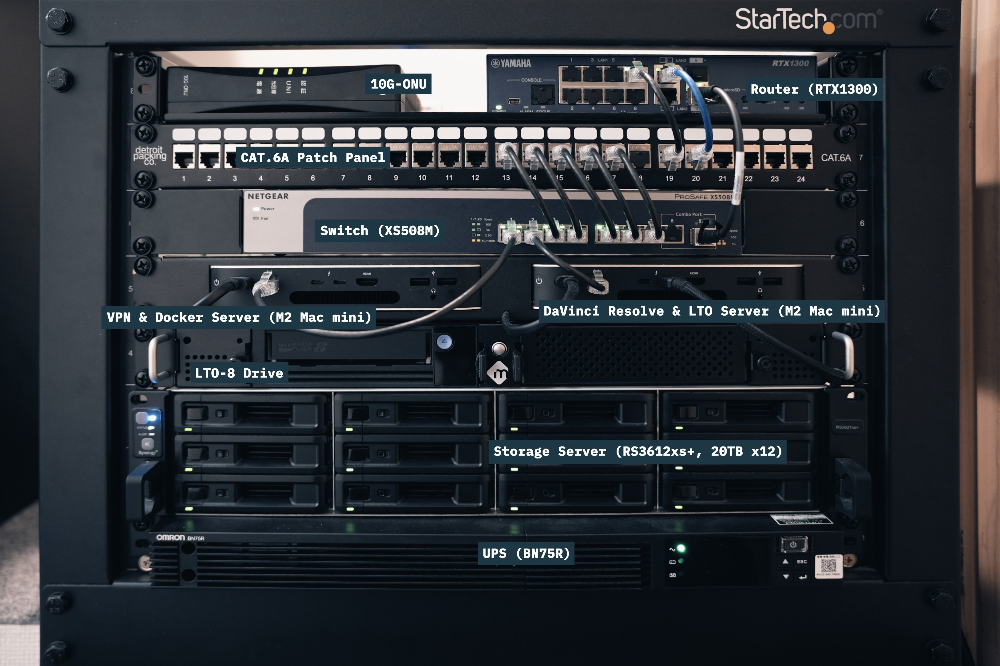
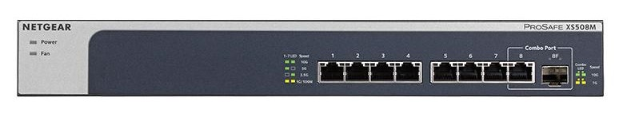
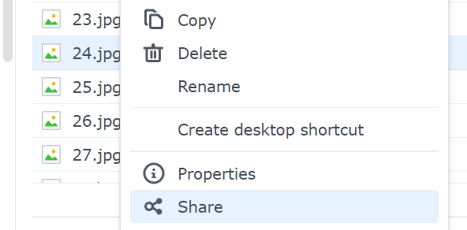
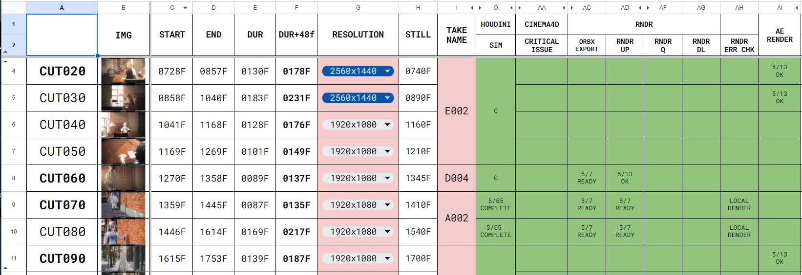
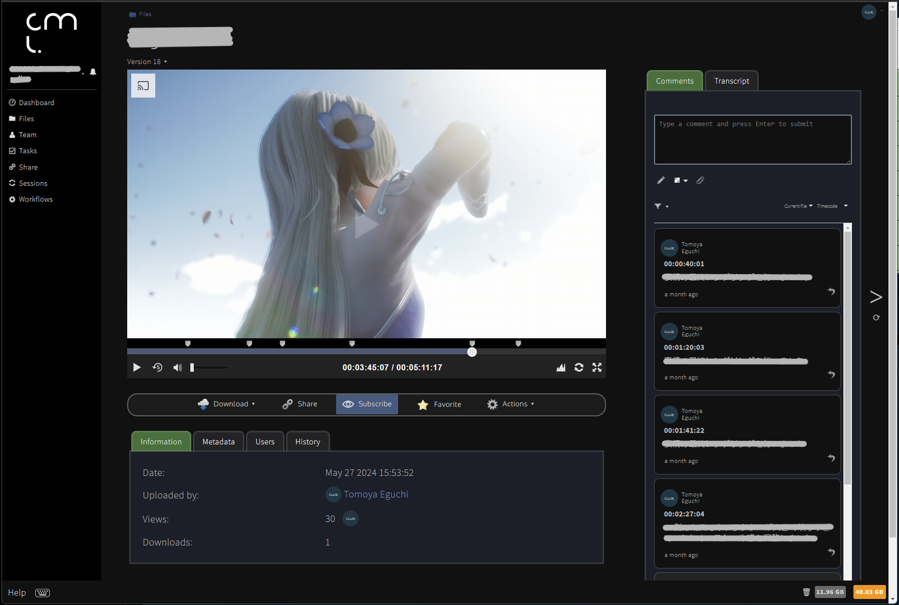
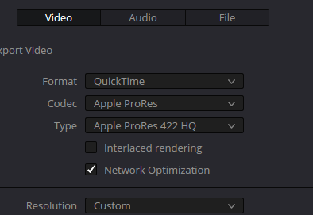

Freelance Director Motion Designer, CG Generalist 最近はちょっと Developer ?
Cumuloworks, Inc.
機材紹介 Cumuloworks,Inc. で導入している機材の紹介
ワークフロー紹介 機材をどのように制作に活かしているか
今後の展望 最近興味があること、今後の拡張の計画（妄想）
質問は随時受け付けています!
2023 年に導入したラック
奥行きを調整できるタイプで、高さは 8U
デスク周りに機材が散らばらず、コンパクトに収まる
見た目がクールだが、あらゆる付属品の価格が高い

NTT 光クロス(10Gbps)を契約しており、そのままルーターに接続を引き込んでいる
Mac アドレスを基に、主要な LAN 内デバイスの IP アドレスをルーター側で固定
8 ポートのシンプルな オール 10GbE スイッチ

ラック全体の電源をバックアップする、最大 680W 対応の UPS
2023 年導入の 200TBのメインサーバー ストレージ以外の機能も集約
Intel® Xeon® D-1541 8-core 2.1 GHz RAM: 32GB DDR4 ECC RDIMM (2x 16GB) 12x 20TB Ultrastar DC HC560 (7200rpm) + 2x 800GB Synology SNV3510 NVMe SSD (Cache) SHR-2 (RAID 6) ... 2 ディスク障害耐性
データセンター用の HDD を採用
Google Drive の容量無制限がサ終 ↓ 「保存したかったら年間 400 万円払ってね」
Google Workspace 追加ストレージ アドオン サブスクリプションの ご利用料金は月額 300 米ドルです 購入すると、ストレージ プールに 10 TB が追加されます
↓ 行き場を失った 100TB のデータ ↓ オンプレ化を決意 ↓ 以後、ストレージ以外もオンプレ化の流れ
Synology のようなパッケージで、デメリットを最小化
プロジェクトファイル・アセットなどを集約
すべてのフォルダ・ファイルの変更を保存し、削除したデータも含めて任意のタイミングに遡ることができる(Synology Drive)
Intelliversioning 機能によって、最低限の容量で差分バックアップ
Synology Drive を使って、NAS 上のフォルダ・ファイルを社外の共同作業者に同期してもらう
ファイルの共有リンクを発行して、外部の人にファイルをダウンロードしてもらう
オンプレの Gigafile 便のような感じ
フォルダごと・ファイルごとにすぐにリンクを発行して共有できるので便利
有効期限やパスワードの設定も可能

10GbE オプションの Mac Mini (M2) を 2 台導入
ラックマウント化し、ディスプレイなしで運用(Parsec でリモートアクセス)
安定動作が期待されるサーバー機能を集約
Mac 環境必須のアプリケーションなどを実行
2024 年始めに導入した Threadripper マシン
現状 VRAM が 24GB で足りないので、将来的に換装予定
CPU: AMD Ryzen Threadripper 7980X M/B: ASUS Pro WS TRX50-SAGE WIFI GPU: MSI GeForce RTX 4090 SUPRIM LIQUID X RAM: Kingston 384GB (4x DDR5-5600 RDIMM ECC 96GB Micron Die) SSD: 2x Nextorage 2TB NVMe SSD PCIe Gen5x4 PSU: SUPERFLOWER LEADEX VII GOLD 1300W CPU_FAN: Arctic Freezer-4U-M CHA: Geometric Future Model 4 Caliburn CHA_FAN: 3x Thermaltake TOUGHFAN 12 Pro
以前まで使っていた水冷のメインマシンを小型化したもの
電力的なコストパフォーマンスは悪いが、まだまだ現役
見た目がかなり気に入っている、史上最高傑作
CPU: AMD Ryzen 9 5950X M/B: MSI Prestige X570 Creation GPU: 2x Zotac GeForce RTX 3090 Trinity RAM: Kingston 384GB (4x DDR5-5600 RDIMM ECC 96GB Micron Die) SSD: Corsair Force Series MP600 PSU: SUPERFLOWER LEADEX VII GOLD 1300W CHA: Jonsbo TK-1 White CHA_FAN: 2x Noctua NF-F12 industrialPPC-3000 PWM CHA_FAN: 2x Noctua NF-A12X15 WATER COOLING: EKWB

Docker で動作する Kollaborate を導入


データの削除は行わず、永続的に保存することを基本方針としている
ファイルを 3 つのカテゴリに分けて考える
参考: 3-2-1 ルール - 3 つのコピー (e.g. メインサーバー + オフサイトサーバー + LTO-8 テープ) - 2 つの異なるメディア (e.g. HDD + LTO-8 テープ) - 1 つのオフサイト (e.g. オフサイトバックアップサーバー, LTO-8 テープは分散保管)
Intel Atom C3538 4-core 2.1 GHz RAM: 16GB DDR4 ECC UDIMM 6x 8TB WD Red
150TB + 毎年 40TB 増加 + 10 年間保存
重要なデータはクラウドストレージで同期を取る
HDD は、2 つ以上のコピーを作る
開発中のアプリケーション（Seequer）
連番ファイルの一覧表示、プレビュー、破損ファイル検出など
アイデア交換や共同開発など...勉強させてください
本講演の資料は Github で公開しています
データが映像関連のみでないことと、今後 200TB 以上にデータが膨れ上がることを想定すると、frame.io のようなクラウドサービスを使い続けることは現実的ではないと判断しました
負荷が高い作業というよりは、負荷が低いが時間がかかる作業を回すことが多いです。それらをメインマシンで行うと、再起動などによっていちいち中断されてしまうからです
e.g. 遅いサーバーからのデータのダウンロードや、時間がかかるファイルの変換処理など
ご指摘ごもっともだと思います！1 つは、過去のデータが必要になるケースというのは結構存在するということです。例えば、類似の案件があり過去のプロジェクトデータを参照したいとか、改訂版を作る必要があるとかです。そういったときに、消してしまってからでは遅いので、原則としてすべてのデータを保存しておくということです。あとは単純に高度なストレージ管理をするのが楽しいからです！
After Effects といった業界スタンダードのほかに、フリー・国産で高度なモーショングラフィック制作ソフトウェアがあるという意義はめちゃくちゃ大きいと思います！（例えば学生や初心者でも手をつけやすい、モーショングラフィックの基本的な概念は十分に学べる、という点。自分もそうでした。）
最近は、会社として映像制作
オンプレという言葉の意味について触れた方が良い
ここからは使用例の解説
PhotoPrismを例に、Dockerの活用について説明